Equazioni non lineari#
Questo notebook presenta i principali metodi numerici per la risoluzione di equazioni non lineari.
L’obiettivo è mostrare non solo le formule dei metodi, ma anche il significato numerico, le ipotesi di convergenza, i test di arresto e alcuni esempi implementati in Python.
Argomenti:
problema \(f(x)=0\);
errore inerente e sensibilità della radice;
metodo di bisezione;
metodi di iterazione funzionale;
punti fissi e convergenza locale;
ordine di convergenza;
metodo di Newton;
radici semplici e radici multiple;
test di arresto;
applicazioni del metodo di Newton: radice quadrata, reciproco, radice \(m\)-esima;
metodo delle secanti;
zeri di polinomi;
metodo di Sturm;
esercizi ed esperimenti numerici.
import math
import numpy as np
import matplotlib.pyplot as plt
np.set_printoptions(precision=12, suppress=True)
Parte I — Il problema \(f(x)=0\)#
1. Equazioni non lineari#
Il problema è determinare le radici di un’equazione non lineare
dove \(f\) è una funzione reale di variabile reale.
Una radice, o zero, è un valore \(x^{*}\) tale che
Nelle applicazioni, raramente esiste una formula esplicita per calcolare \(x^{*}\).
Per questo motivo si usano metodi numerici iterativi.
Un metodo iterativo costruisce una successione
che, sotto opportune ipotesi, converge alla radice desiderata:
Esempio introduttivo#
Consideriamo
Le radici sono
Se vogliamo approssimare la radice positiva, possiamo cercarla numericamente nell’intervallo \([1,2]\), perché
mentre
Il cambio di segno suggerisce, per continuità, che esiste almeno uno zero fra 1 e 2.
def f_intro(x):
return x**2 - 2
xs = np.linspace(0, 2.5, 300)
ys = f_intro(xs)
plt.figure()
plt.axhline(0, linewidth=1)
plt.plot(xs, ys)
plt.scatter([1, 2], [f_intro(1), f_intro(2)])
plt.title("Esempio: f(x)=x^2-2")
plt.xlabel("x")
plt.ylabel("f(x)")
plt.grid(True)
plt.show()
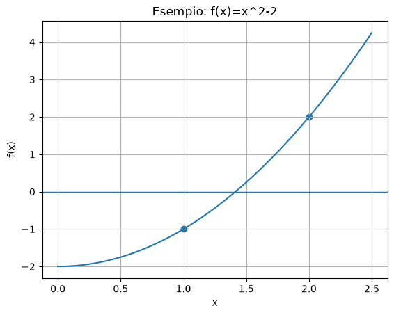
Numero di soluzioni di un’equazione non lineare#
Un’equazione non lineare può avere comportamenti molto diversi rispetto al numero di soluzioni.
Una equazione del tipo
può avere:
nessuna soluzione reale;
una sola soluzione reale;
due o più soluzioni reali;
un numero arbitrariamente grande di soluzioni;
infinite soluzioni.
Questo è uno dei motivi per cui non esiste un unico metodo universale che risolva automaticamente tutte le equazioni non lineari.
Prima di applicare un metodo numerico è spesso utile osservare il grafico della funzione o studiarne alcune proprietà qualitative.
# Esempi di equazioni non lineari con diverso numero di soluzioni reali.
x = np.linspace(-4, 4, 800)
funzioni = [
(lambda x: x**2 + 1, "nessuna soluzione", r"$f(x)=x^2+1$"),
(lambda x: x**2 - 1, "due soluzioni", r"$f(x)=x^2-1$"),
(lambda x: np.sin(x), "infinite soluzioni", r"$f(x)=\sin(x)$"),
]
fig, axes = plt.subplots(1, 3, figsize=(15, 4))
for ax, (f, titolo, formula) in zip(axes, funzioni):
y = f(x)
ax.plot(x, y)
ax.axhline(0, linewidth=1)
ax.set_title(titolo)
ax.set_xlabel("x")
ax.set_ylabel("f(x)")
ax.grid(True)
ax.text(0.05, 0.9, formula, transform=ax.transAxes)
# Evidenziamo gli zeri visibili nei casi in cui sono noti.
if titolo == "due soluzioni":
ax.scatter([-1, 1], [0, 0], zorder=3)
if titolo == "infinite soluzioni":
zeri = np.arange(-3, 4) * np.pi
zeri = zeri[(zeri >= x.min()) & (zeri <= x.max())]
ax.scatter(zeri, np.zeros_like(zeri), zorder=3)
plt.tight_layout()
plt.show()
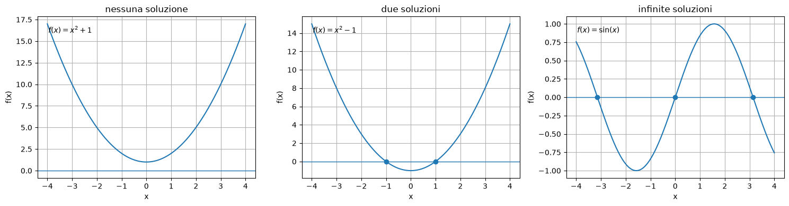
2. Perché servono metodi numerici#
Una equazione come
ha una soluzione nota in forma chiusa.
Ma equazioni come
oppure
non hanno, in generale, una soluzione esprimibile con funzioni elementari.
In questi casi vogliamo calcolare una approssimazione \(\tilde{x}\) tale che:
\(\tilde{x}\) sia vicina alla radice vera \(x^{*}\);
il residuo \(|f(\tilde{x})|\) sia piccolo;
il calcolo sia stabile e non troppo costoso.
def f_cos(x):
return np.cos(x) - x
xs = np.linspace(0, 1.5, 400)
ys = f_cos(xs)
plt.figure()
plt.axhline(0, linewidth=1)
plt.plot(xs, ys)
plt.title("Equazione cos(x)-x=0")
plt.xlabel("x")
plt.ylabel("f(x)")
plt.grid(True)
plt.show()
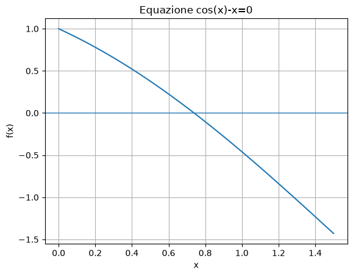
2bis. Molteplicità di una radice#
Una radice \(\alpha\) di una funzione \(f\) è detta radice di molteplicità \(m\) se si può scrivere
dove \(q\) è una funzione continua e
In particolare:
se \(m=1\), la radice è semplice;
se \(m>1\), la radice è multipla.
Per i polinomi, questa definizione coincide con il numero di volte in cui il fattore \((x-\alpha)\) compare nella fattorizzazione.
Caratterizzazione tramite derivate#
Se \(f\) è sufficientemente derivabile, allora \(\alpha\) è una radice di molteplicità \(m\) se
ma
Ad esempio, per una radice doppia,
Le radici multiple sono importanti perché rendono più difficile il problema numerico: molti metodi, incluso Newton standard, convergono più lentamente in presenza di radici multiple.
# Radici semplici, doppie e triple a confronto.
x = np.linspace(-1.5, 1.5, 600)
alpha = 0.0
f_simple = x
f_double = x**2
f_triple = x**3
fig, axes = plt.subplots(1, 3, figsize=(15, 4))
axes[0].plot(x, f_simple)
axes[0].axhline(0, linewidth=1)
axes[0].scatter([alpha], [0], zorder=3)
axes[0].set_title("radice semplice")
axes[0].text(0.05, 0.9, r"$f(x)=x$", transform=axes[0].transAxes)
axes[1].plot(x, f_double)
axes[1].axhline(0, linewidth=1)
axes[1].scatter([alpha], [0], zorder=3)
axes[1].set_title("radice doppia")
axes[1].text(0.05, 0.9, r"$f(x)=x^2$", transform=axes[1].transAxes)
axes[2].plot(x, f_triple)
axes[2].axhline(0, linewidth=1)
axes[2].scatter([alpha], [0], zorder=3)
axes[2].set_title("radice tripla")
axes[2].text(0.05, 0.9, r"$f(x)=x^3$", transform=axes[2].transAxes)
for ax in axes:
ax.set_xlabel("x")
ax.set_ylabel("f(x)")
ax.grid(True)
plt.tight_layout()
plt.show()
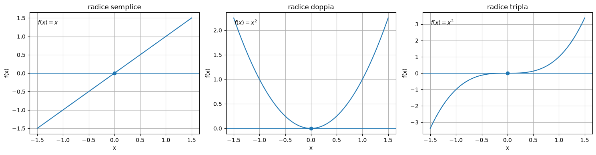
Osservazione geometrica#
Se la molteplicità è pari, la funzione spesso tocca l’asse \(x\) senza attraversarlo.
Questo significa che metodi basati sul cambio di segno, come la bisezione, possono non individuare direttamente la radice.
Se la molteplicità è dispari, la funzione attraversa l’asse \(x\), ma può farlo in modo molto piatto.
Anche in questo caso il problema può essere più difficile numericamente.
Parte II — Errore inerente#
3. Dati esatti e dati perturbati#
In aritmetica finita, la funzione effettivamente valutata può non coincidere esattamente con la funzione matematica \(f\).
Indichiamo con \(\hat{f}\) la funzione perturbata, cioè quella realmente rappresentata o valutata dal calcolatore.
Esempio: per un polinomio \(f(x)=ax^2+bx+c\), avremo \(\hat{f}(x)=\hat{a}x^2+\hat{b}x+\hat{c}\) dove \(\hat{a}\), \(\hat{b}\) e \(\hat{c}\) sono le rappresentazioni in aritmetica finita dei coefficienti.
Se
e
allora \(x^{*}\) è la radice del problema ideale, mentre \(\hat{x}^{*}\) è la radice del problema perturbato.
Definiamo l’errore sui dati come
Il problema è capire come l’errore su \(f\) si trasmette alla radice.
4. Stima dell’errore sulla radice#
Per il teorema del valor medio,
per un opportuno \(\omega\) compreso fra \(x^{*}\) e \(\hat{x}^{*}\).
Poiché
e, usando \(\hat{f}(\hat{x}^{*})=0\),
si ottiene
Questa formula mostra che l’errore sulla radice dipende da due fattori:
l’errore di valutazione della funzione;
il valore di \(|f'|\) vicino alla radice.
5. Interpretazione numerica#
Se \(|f'(x^{*})|\) è grande, una piccola perturbazione verticale della funzione produce una piccola perturbazione orizzontale della radice.
Se invece \(|f'(x^{*})|\) è piccolo, anche una perturbazione piccola della funzione può spostare molto la radice.
Questo è particolarmente importante vicino a radici multiple, dove spesso la derivata si annulla.
# Confronto visivo: radice semplice e radice doppia perturbate
def f_simple(x):
return x - 1
def f_multiple(x):
return (x - 1)**2
xs = np.linspace(0.6, 1.4, 400)
eps = 0.01
plt.figure()
plt.axhline(0, linewidth=1)
plt.plot(xs, f_simple(xs), label="f(x)=x-1")
plt.plot(xs, f_simple(xs)-eps, label="f(x)-eps")
plt.title("Radice semplice: perturbazione piccola")
plt.legend()
plt.grid(True)
plt.show()
plt.figure()
plt.axhline(0, linewidth=1)
plt.plot(xs, f_multiple(xs), label="f(x)=(x-1)^2")
plt.plot(xs, f_multiple(xs)-eps, label="f(x)-eps")
plt.title("Radice multipla: maggiore sensibilità")
plt.legend()
plt.grid(True)
plt.show()
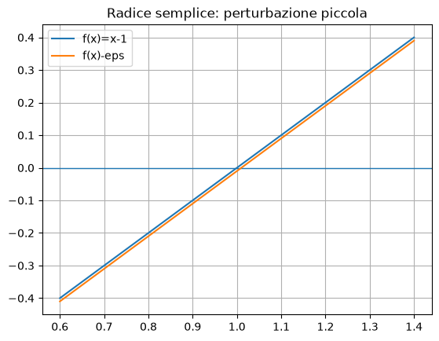
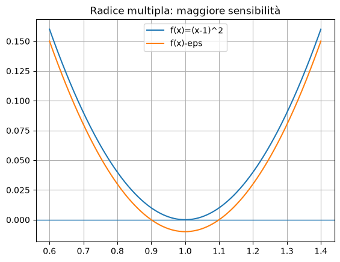
Parte III — Metodo di bisezione#
6. Teorema degli zeri#
Sia \(f\) continua in \([a,b]\).
Se
allora esiste almeno un punto \(x^{*}\in(a,b)\) tale che
Il metodo di bisezione usa questa idea:
si parte da un intervallo \([a,b]\) in cui \(f\) cambia segno;
si calcola il punto medio
si valuta \(f(m)\);
si tiene il sottointervallo in cui continua a esserci un cambio di segno;
si ripete.
7. Algoritmo di bisezione#
Dato \([a,b]\) con \(f(a)f(b)<0\):
calcola \(m=(a+b)/2\);
se \(f(m)=0\), allora \(m\) è la radice;
se \(f(a)f(m)<0\), sostituisci \(b\) con \(m\);
altrimenti sostituisci \(a\) con \(m\);
ripeti finché l’intervallo è sufficientemente piccolo.
A ogni iterazione la lunghezza dell’intervallo viene dimezzata.
Dopo \(k\) iterazioni,
Quindi l’errore sull’approssimazione data dal punto medio è al più
def bisection(f, a, b, tol=1e-12, max_iter=100, return_history=False):
fa = f(a)
fb = f(b)
if fa == 0:
return (a, 0, []) if return_history else (a, 0)
if fb == 0:
return (b, 0, []) if return_history else (b, 0)
if fa * fb > 0:
raise ValueError("La funzione deve cambiare segno in [a,b].")
history = []
for k in range(1, max_iter + 1):
m = 0.5 * (a + b)
fm = f(m)
history.append((k, a, b, m, fm, b - a))
if abs(b - a) <= tol or fm == 0:
return (m, k, history) if return_history else (m, k)
if fa * fm < 0:
b = m
fb = fm
else:
a = m
fa = fm
return (0.5 * (a + b), max_iter, history) if return_history else (0.5 * (a + b), max_iter)
root, niter, hist = bisection(lambda x: x**2 - 2, 1, 2, tol=1e-12, return_history=True)
print("Radice approssimata:", root)
print("Iterazioni:", niter)
print("Errore rispetto a sqrt(2):", abs(root - math.sqrt(2)))
Radice approssimata: 1.414213562372879
Iterazioni: 41
Errore rispetto a sqrt(2): 2.1604940059205546e-13
8. Tabella delle iterazioni di bisezione#
La tabella seguente mostra come si restringe l’intervallo.
for row in hist[:10]:
k, a, b, m, fm, width = row
print(f"k={k:2d}, a={a:.12f}, b={b:.12f}, m={m:.12f}, f(m)={fm:.3e}, ampiezza={width:.3e}")
k= 1, a=1.000000000000, b=2.000000000000, m=1.500000000000, f(m)=2.500e-01, ampiezza=1.000e+00
k= 2, a=1.000000000000, b=1.500000000000, m=1.250000000000, f(m)=-4.375e-01, ampiezza=5.000e-01
k= 3, a=1.250000000000, b=1.500000000000, m=1.375000000000, f(m)=-1.094e-01, ampiezza=2.500e-01
k= 4, a=1.375000000000, b=1.500000000000, m=1.437500000000, f(m)=6.641e-02, ampiezza=1.250e-01
k= 5, a=1.375000000000, b=1.437500000000, m=1.406250000000, f(m)=-2.246e-02, ampiezza=6.250e-02
k= 6, a=1.406250000000, b=1.437500000000, m=1.421875000000, f(m)=2.173e-02, ampiezza=3.125e-02
k= 7, a=1.406250000000, b=1.421875000000, m=1.414062500000, f(m)=-4.272e-04, ampiezza=1.562e-02
k= 8, a=1.414062500000, b=1.421875000000, m=1.417968750000, f(m)=1.064e-02, ampiezza=7.812e-03
k= 9, a=1.414062500000, b=1.417968750000, m=1.416015625000, f(m)=5.100e-03, ampiezza=3.906e-03
k=10, a=1.414062500000, b=1.416015625000, m=1.415039062500, f(m)=2.336e-03, ampiezza=1.953e-03
9. Numero di iterazioni richieste#
Se vogliamo un errore finale di al più \(\mathrm{tol}\), dobbiamo avere
Da cui
Quindi il numero di iterazioni cresce solo logaritmicamente rispetto alla tolleranza, ma il metodo rimane relativamente lento perché a ogni passo guadagna circa una cifra binaria.
def bisection_iterations_needed(a, b, tol):
return math.ceil(math.log2((b - a) / tol))
for tol in [1e-3, 1e-6, 1e-9, 1e-12]:
print(f"tol={tol:.0e}, iterazioni richieste circa:", bisection_iterations_needed(1, 2, tol))
tol=1e-03, iterazioni richieste circa: 10
tol=1e-06, iterazioni richieste circa: 20
tol=1e-09, iterazioni richieste circa: 30
tol=1e-12, iterazioni richieste circa: 40
10. Test di arresto e aritmetica finita#
In aritmetica finita non ha senso chiedere una tolleranza arbitrariamente piccola.
Un test realistico tiene conto della precisione macchina.
In Python, np.finfo(float).eps è la distanza relativa fra 1 e il successivo numero floating point rappresentabile.
Un test pratico è
dove \(\varepsilon\) rappresenta una misura della precisione di macchina.
eps = np.finfo(float).eps
print("eps =", eps)
def bisection_safe(f, a, b, tol=1e-12, max_iter=100):
fa = f(a)
fb = f(b)
if a < 0 < b and f(0.0) == 0:
return 0.0, 0
if fa * fb > 0:
raise ValueError("La funzione deve cambiare segno in [a,b].")
for k in range(1, max_iter + 1):
m = 0.5 * (a + b)
fm = f(m)
if abs(b - a) <= tol + eps * min(abs(a), abs(b)) or fm == 0:
return m, k
if fa * fm < 0:
b = m
fb = fm
else:
a = m
fa = fm
return 0.5 * (a + b), max_iter
root, it = bisection_safe(lambda x: x**2 - 2, 1, 2)
print(root, it)
eps = 2.220446049250313e-16
1.414213562372879 41
11. Limiti del metodo di bisezione#
Vantaggi:
è semplice;
è robusto;
converge sempre se \(f\) è continua e cambia segno;
non richiede di valutare la funzione, ma solo il suo segno;
non richiede derivate.
Svantaggi:
converge lentamente;
usa solo il segno di \(f\), non la sua forma. Di conseguenza può richiedere infinite iterazioni per calcolare lo zero di una retta \(f(x)=ax+b\);
se in un intervallo ci sono più radici, ne approssima una sola;
non funziona direttamente per radici di molteplicità pari se non c’è cambio di segno.
# Esempio di radice doppia: nessun cambio di segno
def f_double(x):
return (x - 1)**2
print("f(0) =", f_double(0))
print("f(2) =", f_double(2))
print("Prodotto:", f_double(0) * f_double(2))
f(0) = 1
f(2) = 1
Prodotto: 1
Parte IV — Iterazione funzionale#
12. Da \(f(x)=0\) a \(x=g(x)\)#
Un metodo di iterazione funzionale costruisce una successione
Una soluzione dell’equazione
si chiama punto fisso di \(g\).
Per usare questo schema per risolvere
si trasforma il problema in una forma equivalente
Per esempio, scegliendo una funzione \(h(x)\neq 0\) si può porre
Allora
equivale a
def fixed_point(g, x0, tol=1e-12, max_iter=100, return_history=False):
x = float(x0)
history = [x]
for k in range(1, max_iter + 1):
x_new = g(x)
history.append(x_new)
if abs(x_new - x) <= tol:
return (x_new, k, history) if return_history else (x_new, k)
x = x_new
return (x, max_iter, history) if return_history else (x, max_iter)
13. Esempio: \(x=\cos(x)\)#
L’equazione
può essere scritta come
Quindi usiamo
root, it, hist = fixed_point(np.cos, x0=1.0, tol=1e-12, return_history=True)
print("Punto fisso:", root)
print("Iterazioni:", it)
print("Residuo cos(x)-x:", math.cos(root) - root)
for k, xk in enumerate(hist[:10]):
print(f"k={k:2d}, x_k={xk:.12f}")
Punto fisso: 0.7390851332147725
Iterazioni: 69
Residuo cos(x)-x: 6.495914917081791e-13
k= 0, x_k=1.000000000000
k= 1, x_k=0.540302305868
k= 2, x_k=0.857553215846
k= 3, x_k=0.654289790498
k= 4, x_k=0.793480358743
k= 5, x_k=0.701368773623
k= 6, x_k=0.763959682901
k= 7, x_k=0.722102425027
k= 8, x_k=0.750417761764
k= 9, x_k=0.731404042423
Interpretazione grafica dell’equazione \(\cos(x)-x=0\)#
L’equazione
può essere vista in due modi equivalenti:
come ricerca dello zero della funzione \(f(x)=\cos(x)-x\);
come ricerca del punto fisso della funzione \(g(x)=\cos(x)\), cioè dell’intersezione fra \(y=\cos(x)\) e \(y=x\).
I due grafici seguenti mostrano le due interpretazioni.
# Confronto tra la formulazione f(x)=0 e la formulazione x=g(x).
alpha = 0.7390851332151607
x = np.linspace(0, 1.5, 500)
fig, axes = plt.subplots(1, 2, figsize=(12, 4))
# Sinistra: zero di f(x)=cos(x)-x
axes[0].plot(x, np.cos(x) - x, label=r"$f(x)=\cos(x)-x$")
axes[0].axhline(0, linewidth=1, label=r"$y=0$")
axes[0].scatter([alpha], [0], zorder=3)
axes[0].annotate(r"$\alpha$", xy=(alpha, 0), xytext=(alpha+0.08, 0.12),
arrowprops=dict(arrowstyle="->"))
axes[0].set_title(r"Zero di $f(x)=\cos(x)-x$")
axes[0].set_xlabel("x")
axes[0].set_ylabel("f(x)")
axes[0].grid(True)
axes[0].legend()
# Destra: punto fisso x=cos(x)
axes[1].plot(x, np.cos(x), label=r"$y=\cos(x)$")
axes[1].plot(x, x, label=r"$y=x$")
axes[1].scatter([alpha], [alpha], zorder=3)
axes[1].annotate(r"$(\alpha,\alpha)$", xy=(alpha, alpha), xytext=(alpha+0.08, alpha-0.2),
arrowprops=dict(arrowstyle="->"))
axes[1].set_title(r"Punto fisso di $g(x)=\cos(x)$")
axes[1].set_xlabel("x")
axes[1].set_ylabel("y")
axes[1].grid(True)
axes[1].legend()
plt.tight_layout()
plt.show()
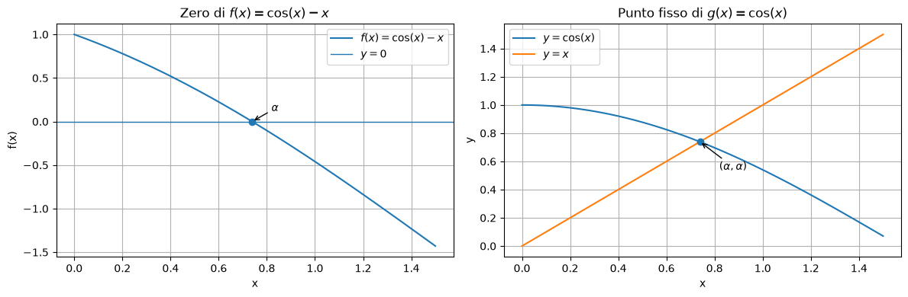
14. Condizione di convergenza locale#
Sia \(x^{*}\) un punto fisso di \(g\).
Se \(g\) è derivabile in un intorno di \(x^{*}\) e
in tale intorno, allora l’iterazione
converge localmente a \(x^{*}\).
La stima fondamentale è
Quindi
Interpretazione geometrica dell’iterazione di punto fisso#
L’iterazione
può essere rappresentata graficamente usando il diagramma a ragnatela, o cobweb plot.
Si disegnano:
la curva \(y=g(x)\);
la retta \(y=x\);
passaggi verticali fino alla curva;
passaggi orizzontali fino alla retta \(y=x\).
Il punto fisso \(\alpha\) è l’intersezione fra \(y=g(x)\) e \(y=x\).
Il comportamento dipende dal valore di \(g'(\alpha)\):
se \(0<g'(\alpha)<1\), la convergenza è monotona;
se \(-1<g'(\alpha)<0\), la convergenza è oscillante;
se \(g'(\alpha)>1\), si ha divergenza monotona;
se \(g'(\alpha)<-1\), si ha divergenza oscillante.
{kind=link}
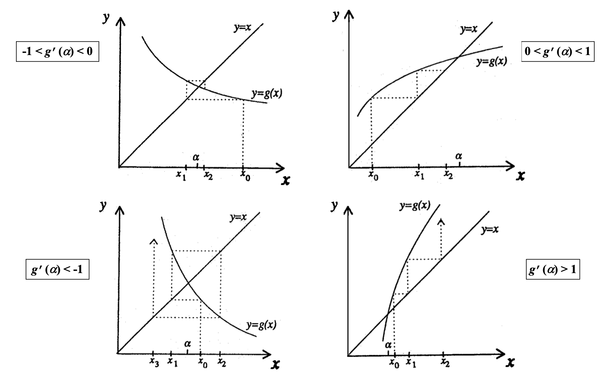

Interpretazione#
La quantità \(|g'(x^{*})|\) determina il comportamento locale:
se \(|g'(x^{*})|<1\), ci aspettiamo convergenza locale;
se \(|g'(x^{*})|>1\), ci aspettiamo divergenza;
se \(g'(x^{*})<0\), gli iterati tendono a oscillare attorno al punto fisso;
se \(g'(x^{*})>0\), gli iterati si avvicinano senza alternare lato.
# Confronto di due iterazioni per risolvere x^2-2=0
sqrt2 = math.sqrt(2)
# g1 deriva da x = 0.5*(x + 2/x), metodo di Erone/Newton per sqrt(2)
def g1(x):
return 0.5 * (x + 2/x)
# g2: trasformazione x = x - alpha*(x^2-2), con alpha scelto male
def g2(x):
alpha = 1.0
return x - alpha * (x**2 - 2)
for name, g in [("g1", g1), ("g2", g2)]:
try:
root, it, hist = fixed_point(g, 1.5, tol=1e-12, max_iter=20, return_history=True)
print(name, "ultimo valore:", hist[-1], "iterazioni:", it, "errore:", abs(hist[-1] - sqrt2))
print(" primi valori:", [round(v, 8) for v in hist[:6]])
except Exception as e:
print(name, "errore:", e)
g1 ultimo valore: 1.414213562373095 iterazioni: 5 errore: 2.220446049250313e-16
primi valori: [1.5, 1.41666667, 1.41421569, 1.41421356, 1.41421356, 1.41421356]
g2 ultimo valore: -0.743429505278514 iterazioni: 20 errore: 2.157643067651609
primi valori: [1.5, 1.25, 1.6875, 0.83984375, 2.13450623, -0.4216106]
Parte V — Ordine di convergenza#
15. Definizione di ordine di convergenza#
Sia \(x_k\) una successione che converge a \(x^{*}\) e sia
Se esiste \(p\ge 1\) tale che
allora la successione ha ordine di convergenza \(p\) e \(\gamma\) è il fattore di convergenza.
Terminologia:
\(p=1\) e \(0<\gamma<1\): convergenza lineare;
\(p=1\) e \(\gamma=1\): convergenza sublineare;
\(p>1\): convergenza superlineare;
\(p=2\): convergenza quadratica.
16. Significato pratico#
Se la convergenza è lineare,
L’errore viene moltiplicato circa per una costante minore di uno a ogni iterazione.
Se la convergenza è quadratica,
Quando \(|e_k|\) è piccolo, il quadrato è molto più piccolo: il numero di cifre corrette tende circa a raddoppiare a ogni iterazione.
# Simulazione di convergenza lineare e quadratica
errors_linear = [1e-1]
errors_quad = [1e-1]
for k in range(8):
errors_linear.append(0.5 * errors_linear[-1])
errors_quad.append(2.0 * errors_quad[-1]**2)
print("k lineare quadratica")
for k, (el, eq) in enumerate(zip(errors_linear, errors_quad)):
print(f"{k:1d} {el:.3e} {eq:.3e}")
k lineare quadratica
0 1.000e-01 1.000e-01
1 5.000e-02 2.000e-02
2 2.500e-02 8.000e-04
3 1.250e-02 1.280e-06
4 6.250e-03 3.277e-12
5 3.125e-03 2.147e-23
6 1.563e-03 9.223e-46
7 7.813e-04 1.701e-90
8 3.906e-04 5.790e-180
17. Ordine di convergenza per iterazioni funzionali#
Se \(g\) è sufficientemente regolare e \(x^{*}\) è un punto fisso, lo sviluppo di Taylor dà:
Se
e
allora l’ordine di convergenza è \(p\).
Parte VI — Metodo di Newton#
18. Derivazione del metodo di Newton#
Supponiamo che \(x_k\) sia una approssimazione della radice \(x^{*}\).
Sviluppiamo \(f\) in serie di Taylor attorno a \(x_k\):
Se \(x_k\) è vicino alla radice, trascuriamo il termine quadratico:
Risolvendo rispetto a \(x^{*}\):
Quindi definiamo l’iterazione di Newton:
19. Interpretazione geometrica#
Il metodo di Newton sostituisce la funzione con la retta tangente nel punto \(x_k\).
La tangente a \(f\) in \(x_k\) è
L’intersezione della tangente con l’asse \(x\) si ottiene imponendo \(y=0\):
da cui
Grafico della tangente di Newton#
Il grafico seguente mostra un singolo passo del metodo di Newton.
A partire da \(x_0\), si costruisce la tangente alla curva \(y=f(x)\) nel punto \((x_0,f(x_0))\).
L’intersezione della tangente con l’asse \(x\) è il nuovo iterato \(x_1\).
# Interpretazione geometrica di un passo del metodo di Newton.
# Scelgo x0=2.2, così il nuovo iterato x1 è ben distinto dalla radice sqrt(2).
f = lambda x: x**2 - 2
df = lambda x: 2*x
x0 = 2.2
x1 = x0 - f(x0)/df(x0)
alpha = math.sqrt(2)
xs = np.linspace(0.5, 2.5, 600)
tangent = f(x0) + df(x0) * (xs - x0)
plt.figure(figsize=(8, 5))
plt.plot(xs, f(xs), label="f(x)=x^2-2")
plt.plot(xs, tangent, "--", label="tangente in x0")
plt.axhline(0, color="black", linewidth=1)
# Punti importanti
plt.scatter([x0], [f(x0)], s=70, zorder=4, label="punto di tangenza")
plt.scatter([x1], [0], s=80, zorder=5, label="x1: intersezione tangente-asse x")
plt.scatter([alpha], [0], s=80, marker="x", zorder=5, label="radice alpha")
# Linee verticali per rendere distinguibili x1 e alpha
plt.axvline(x1, linestyle=":", linewidth=1.5)
plt.axvline(alpha, linestyle=":", linewidth=1.5)
plt.annotate("x0", xy=(x0, 0), xytext=(x0+0.03, -0.55))
plt.annotate("x1", xy=(x1, 0), xytext=(x1+0.04, 0.45),
arrowprops=dict(arrowstyle="->"))
plt.annotate("alpha", xy=(alpha, 0), xytext=(alpha-0.35, -0.55),
arrowprops=dict(arrowstyle="->"))
plt.annotate("(x0, f(x0))", xy=(x0, f(x0)), xytext=(1.25, f(x0)+0.6),
arrowprops=dict(arrowstyle="->"))
plt.title("Metodo di Newton: tangente e nuovo iterato")
plt.xlabel("x")
plt.ylabel("f(x)")
plt.ylim(-1.2, 4.0)
plt.grid(True)
plt.legend()
plt.show()
print("x0 =", x0)
print("x1 =", x1)
print("radice alpha =", alpha)
print("|x1-alpha| =", abs(x1-alpha))
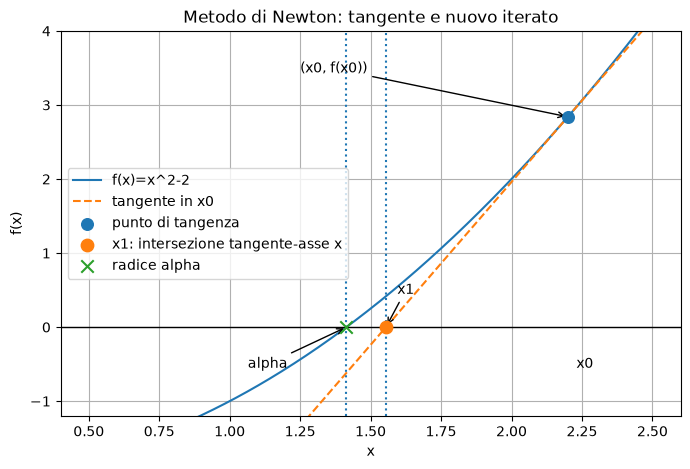
x0 = 2.2
x1 = 1.5545454545454547
radice alpha = 1.4142135623730951
|x1-alpha| = 0.14033189217235953
def newton(f, df, x0, tol_x=1e-12, tol_f=1e-14, max_iter=50, return_history=False):
x_old = float(x0)
history = [(0, x_old, f(x_old), None)]
for k in range(1, max_iter + 1):
fx = f(x_old)
dfx = df(x_old)
if abs(dfx) < np.finfo(float).tiny:
raise ZeroDivisionError("Derivata troppo piccola o nulla.")
x_new = x_old - fx / dfx
step = abs(x_new - x_old)
history.append((k, x_new, f(x_new), step))
if step <= tol_x + np.finfo(float).eps * min(abs(x_new), abs(x_old)):
return (x_new, k, history, "step") if return_history else (x_new, k)
if abs(f(x_new)) <= tol_f:
return (x_new, k, history, "residual") if return_history else (x_new, k)
x_old = x_new
return (x_old, max_iter, history, "max_iter") if return_history else (x_old, max_iter)
f = lambda x: x**2 - 2
df = lambda x: 2*x
root, it, hist, reason = newton(f, df, x0=1.0, return_history=True)
print("Radice:", root)
print("Iterazioni:", it)
print("Motivo arresto:", reason)
print("Errore:", abs(root - math.sqrt(2)))
for k, xk, fxk, step in hist:
print(f"k={k:2d}, x={xk:.15f}, f(x)={fxk:.3e}, step={step}")
Radice: 1.4142135623730951
Iterazioni: 5
Motivo arresto: residual
Errore: 0.0
k= 0, x=1.000000000000000, f(x)=-1.000e+00, step=None
k= 1, x=1.500000000000000, f(x)=2.500e-01, step=0.5
k= 2, x=1.416666666666667, f(x)=6.944e-03, step=0.08333333333333326
k= 3, x=1.414215686274510, f(x)=6.007e-06, step=0.002450980392156854
k= 4, x=1.414213562374690, f(x)=4.511e-12, step=2.123899820016817e-06
k= 5, x=1.414213562373095, f(x)=4.441e-16, step=1.5947243525715749e-12
20. Convergenza locale del metodo di Newton#
Newton è un caso particolare di iterazione funzionale con
Derivando,
Se \(x^{*}\) è una radice semplice, cioè
allora
Questo spiega perché Newton ha convergenza almeno quadratica vicino a una radice semplice.
21. Ordine quadratico di Newton#
Se \(f\) è sufficientemente regolare e \(x^{*}\) è una radice semplice, allora Newton ha ordine di convergenza 2.
Più precisamente,
Quindi, quando si è abbastanza vicini alla radice, il numero di cifre corrette tende circa a raddoppiare a ogni iterazione.
# Verifica numerica del comportamento quadratico per sqrt(2)
xstar = math.sqrt(2)
f = lambda x: x**2 - 2
df = lambda x: 2*x
root, it, hist, _ = newton(f, df, x0=1.5, return_history=True)
print("k errore rapporto |e_{k+1}|/|e_k|^2")
errors = [abs(xk - xstar) for k, xk, fxk, step in hist]
for k in range(len(errors) - 1):
if errors[k] != 0:
ratio = errors[k+1] / (errors[k]**2)
print(f"{k:1d} {errors[k]:.3e} {ratio:.6f}")
k errore rapporto |e_{k+1}|/|e_k|^2
0 8.579e-02 0.333333
1 2.453e-03 0.352941
2 2.124e-06 0.353522
3 1.595e-12 0.000000
22. Radici multiple#
Se \(x^{*}\) è una radice di molteplicità \(m>1\), allora
In questo caso Newton perde la convergenza quadratica e diventa in generale solo lineare.
Si può mostrare che
Quindi, se \(m=2\),
Poichè la derivata ha valore assoluto minore di uno, ma è non nulla, la convergenza è solo lineare.
# Esempio: radice doppia in x=1
f = lambda x: (x - 1)**2
df = lambda x: 2*(x - 1)
xstar = 1.0
root, it, hist, reason = newton(f, df, x0=1.2, tol_x=1e-14, max_iter=20, return_history=True)
print("Radice:", root, "iterazioni:", it, "motivo:", reason)
print("k x_k errore rapporto e_{k+1}/e_k")
errors = [abs(xk - xstar) for k, xk, fxk, step in hist]
for k in range(len(errors)-1):
ratio = errors[k+1] / errors[k] if errors[k] != 0 else np.nan
print(f"{k:2d} {hist[k][1]:.12f} {errors[k]:.3e} {ratio:.6f}")
Radice: 1.0000001907348632 iterazioni: 20 motivo: max_iter
k x_k errore rapporto e_{k+1}/e_k
0 1.200000000000 2.000e-01 0.500000
1 1.100000000000 1.000e-01 0.500000
2 1.050000000000 5.000e-02 0.500000
3 1.025000000000 2.500e-02 0.500000
4 1.012500000000 1.250e-02 0.500000
5 1.006250000000 6.250e-03 0.500000
6 1.003125000000 3.125e-03 0.500000
7 1.001562500000 1.562e-03 0.500000
8 1.000781250000 7.812e-04 0.500000
9 1.000390625000 3.906e-04 0.500000
10 1.000195312500 1.953e-04 0.500000
11 1.000097656250 9.766e-05 0.500000
12 1.000048828125 4.883e-05 0.500000
13 1.000024414063 2.441e-05 0.500000
14 1.000012207031 1.221e-05 0.500000
15 1.000006103516 6.104e-06 0.500000
16 1.000003051758 3.052e-06 0.500000
17 1.000001525879 1.526e-06 0.500000
18 1.000000762939 7.629e-07 0.500000
19 1.000000381470 3.815e-07 0.500000
23. Newton modificato per radici multiple#
Se la molteplicità \(m\) della radice è nota, si può usare
Per una radice di molteplicità \(m\), questo metodo recupera la convergenza quadratica.
def newton_modified(f, df, x0, m, tol=1e-12, tol_f=1e-14, max_iter=50):
x = float(x0)
hist = [x]
for k in range(max_iter):
fx = f(x)
# Se siamo già arrivati alla radice, ci fermiamo
if abs(fx) <= tol_f:
return x, k, hist
dfx = df(x)
# Evita divisioni per zero o per numeri troppo piccoli
if abs(dfx) < 1e-15:
raise ZeroDivisionError(
"Derivata nulla o troppo piccola: il metodo non può proseguire."
)
x_new = x - m * fx / dfx
hist.append(x_new)
if abs(x_new - x) <= tol:
return x_new, k + 1, hist
x = x_new
return x, max_iter, hist
# Esempio con radice doppia in x = 1
f = lambda x: (x - 1)**2 * (x + 2)
# Derivata:
# f(x) = (x - 1)^2 (x + 2)
# f'(x) = 2(x - 1)(x + 2) + (x - 1)^2
df = lambda x: 2*(x - 1)*(x + 2) + (x - 1)**2
root, it, hist_mod = newton_modified(f, df, x0=1.8, m=2)
print("Radice:", root)
print("Iterazioni:", it)
print("Iterati:")
for k, xk in enumerate(hist_mod):
print(f"k={k:2d}, x_k={xk:.15f}, f(x_k)={f(xk):.3e}")
Radice: 1.0000000000000036
Iterazioni: 4
Iterati:
k= 0, x_k=1.800000000000000, f(x_k)=2.432e+00
k= 1, x_k=1.076190476190476, f(x_k)=1.786e-02
k= 2, x_k=1.000931993592544, f(x_k)=2.607e-06
k= 3, x_k=1.000000144701246, f(x_k)=6.282e-14
k= 4, x_k=1.000000000000004, f(x_k)=3.787e-29
24. Problemi pratici del metodo di Newton#
Newton può essere molto veloce, ma non è globalmente convergente.
Può fallire se:
\(x_0\) è troppo lontano dalla radice;
\(f'(x_k)\) è molto piccolo;
la tangente porta fuori dalla regione di interesse;
la funzione ha più radici e si converge a quella “sbagliata”;
la radice è multipla.
Tre casi in cui Newton può fallire o comportarsi male#
Il metodo di Newton è locale: funziona molto bene quando il punto iniziale è già sufficientemente vicino a una radice semplice, ma può fallire in altri casi.
I tre grafici seguenti mostrano situazioni tipiche:
ciclo: gli iterati possono rimbalzare fra pochi valori senza convergere;
derivata molto piccola: la tangente è quasi orizzontale e il nuovo iterato può essere molto lontano;
più radici: il metodo può convergere a una radice diversa da quella attesa.

Per questo motivo, spesso si usa una strategia ibrida:
bisezione per localizzare una radice in modo robusto;
Newton per accelerare la convergenza quando si è vicini.
# Esempio in cui Newton può avere comportamento delicato
f = lambda x: x**3 - 2*x + 2
df = lambda x: 3*x**2 - 2
for x0 in [-2.0, 0.0, 0.5, 1.0, 2.0]:
try:
root, it, hist, reason = newton(f, df, x0=x0, max_iter=20, return_history=True)
print(f"x0={x0: .2f} -> x={root:.12f}, f(x)={f(root):.3e}, it={it}, motivo={reason}")
except Exception as e:
print(f"x0={x0: .2f} -> errore: {e}")
x0=-2.00 -> x=-1.769292354239, f(x)=0.000e+00, it=5, motivo=step
x0= 0.00 -> x=0.000000000000, f(x)=2.000e+00, it=20, motivo=max_iter
x0= 0.50 -> x=-1.769292354239, f(x)=0.000e+00, it=9, motivo=residual
x0= 1.00 -> x=1.000000000000, f(x)=1.000e+00, it=20, motivo=max_iter
x0= 2.00 -> x=-1.769292354239, f(x)=0.000e+00, it=9, motivo=residual
Parte VII — Test di arresto#
26. Test di arresto per Newton#
Un test ideale sarebbe
ma \(x^{*}\) non è noto.
Si usano quindi criteri pratici:
passo piccolo:
residuo piccolo:
limite massimo di iterazioni:
È buona pratica usare più di un criterio.
Perché controllare sia il passo sia il residuo#
I criteri di arresto basati solo sul passo o solo sul residuo possono essere fuorvianti.
Un residuo piccolo può non implicare una buona approssimazione della radice, soprattutto vicino a radici multiple o funzioni molto piatte.
Un passo piccolo può indicare solo che la correzione di Newton è piccola, ma il residuo può essere ancora troppo grande rispetto alla scala richiesta.
Per questo è buona pratica controllare entrambi:
e
# Perché usare sia il test sul passo sia il test sul residuo.
# Due esempi schematici robusti per VS Code.
fig, axes = plt.subplots(1, 2, figsize=(14, 5))
# Caso A: residuo piccolo ma punto ancora visibilmente lontano dalla radice,
# perché la funzione è molto piatta vicino alla radice.
fA = lambda x: (x - 1)**4
xA = np.linspace(0.65, 1.35, 500)
xk_A = 1.12
ax = axes[0]
ax.plot(xA, fA(xA), label="f(x)=(x-1)^4")
ax.axhline(0, color="black", linewidth=1)
ax.scatter([1.0], [0.0], s=70, label="radice")
ax.scatter([xk_A], [fA(xk_A)], s=70, label="xk")
ax.axvline(xk_A, linestyle=":", linewidth=1.2)
ax.annotate("residuo piccolo", xy=(xk_A, fA(xk_A)), xytext=(1.16, 0.00018),
arrowprops=dict(arrowstyle="->"))
ax.annotate("errore in x non nullo", xy=(xk_A, 0), xytext=(0.72, 0.00045),
arrowprops=dict(arrowstyle="->"))
ax.set_title("Residuo piccolo non basta")
ax.set_xlabel("x")
ax.set_ylabel("f(x)")
ax.set_ylim(-0.00005, 0.0007)
ax.grid(True)
ax.legend()
# Caso B: passo di Newton piccolo perché la derivata è molto grande,
# ma il residuo iniziale è grande.
fB = lambda x: 1e12*(x - 1) + 1e6
dfB = lambda x: 1e12 + 0*x
xk_B = 1.0
step_B = abs(fB(xk_B)/dfB(xk_B))
root_B = xk_B - fB(xk_B)/dfB(xk_B)
xB = np.linspace(0.9999985, 1.0000008, 500)
ax = axes[1]
ax.plot(xB, fB(xB), label="funzione con derivata grande")
ax.axhline(0, color="black", linewidth=1)
ax.scatter([xk_B], [fB(xk_B)], s=70, label="xk")
ax.scatter([root_B], [0.0], s=70, label="radice")
ax.annotate("passo piccolo", xy=((xk_B+root_B)/2, 0), xytext=(0.9999990, -6e5),
arrowprops=dict(arrowstyle="->"))
ax.annotate("residuo grande", xy=(xk_B, fB(xk_B)), xytext=(0.99999935, 1.35e6),
arrowprops=dict(arrowstyle="->"))
ax.set_title("Passo piccolo non basta")
ax.set_xlabel("x")
ax.set_ylabel("f(x)")
ax.grid(True)
ax.legend()
plt.tight_layout()
plt.show()
print("Caso A: xk =", xk_A, "residuo =", fA(xk_A), "errore =", abs(xk_A - 1))
print("Caso B: xk =", xk_B, "residuo =", fB(xk_B), "passo Newton =", step_B)
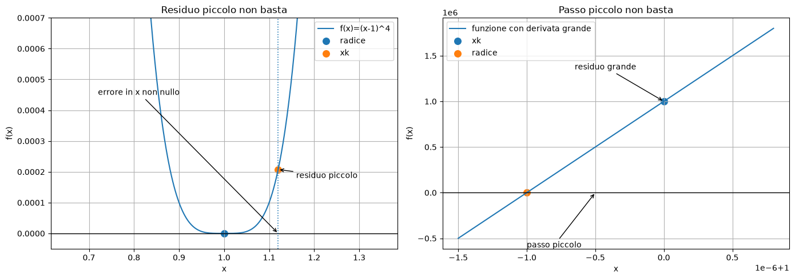
Caso A: xk = 1.12 residuo = 0.00020736000000000073 errore = 0.1200000000000001
Caso B: xk = 1.0 residuo = 1000000.0 passo Newton = 1e-06
def newton_with_report(f, df, x0, tol_x=1e-12, tol_f=1e-12, max_iter=50):
x = float(x0)
eps = np.finfo(float).eps
print(f"{'k':>3} {'x_k':>20} {'f(x_k)':>15} {'step':>15}")
for k in range(max_iter + 1):
fx = f(x)
if k == 0:
print(f"{k:3d} {x:20.12e} {fx:15.6e} {'-':>15}")
else:
print(f"{k:3d} {x:20.12e} {fx:15.6e} {step:15.6e}")
if abs(fx) <= tol_f:
return x, k, "residuo"
dfx = df(x)
if abs(dfx) < np.finfo(float).tiny:
return x, k, "derivata nulla"
x_new = x - fx / dfx
step = abs(x_new - x)
if step <= tol_x + eps * min(abs(x_new), abs(x)):
return x_new, k + 1, "passo"
x = x_new
return x, max_iter, "max_iter"
f = lambda x: x**2 - 2
df = lambda x: 2*x
root, it, reason = newton_with_report(f, df, 1.0)
print("\nRisultato:", root, "iterazioni:", it, "arresto:", reason)
k x_k f(x_k) step
0 1.000000000000e+00 -1.000000e+00 -
1 1.500000000000e+00 2.500000e-01 5.000000e-01
2 1.416666666667e+00 6.944444e-03 8.333333e-02
3 1.414215686275e+00 6.007305e-06 2.450980e-03
4 1.414213562375e+00 4.510614e-12 2.123900e-06
5 1.414213562373e+00 4.440892e-16 1.594724e-12
Risultato: 1.4142135623730951 iterazioni: 5 arresto: residuo
Parte VIII — Applicazioni di Newton#
27. Calcolo di \(\sqrt{a}\)#
Per calcolare la radice quadrata positiva di \(a>0\), risolviamo
Qui
Newton dà
Questa è la formula di Erone.
def sqrt_newton(a, x0=1.0, tol=1e-14, max_iter=50):
if a < 0:
raise ValueError("a deve essere non negativo.")
if a == 0:
return 0.0, 0, [0.0]
x = float(x0)
hist = [x]
for k in range(1, max_iter + 1):
x_new = 0.5 * (x + a / x)
hist.append(x_new)
if abs(x_new - x) <= tol:
return x_new, k, hist
x = x_new
return x, max_iter, hist
a = 10
root, it, hist = sqrt_newton(a)
print("sqrt_newton:", root)
print("math.sqrt:", math.sqrt(a))
print("iterazioni:", it)
print("errore:", abs(root - math.sqrt(a)))
sqrt_newton: 3.162277660168379
math.sqrt: 3.1622776601683795
iterazioni: 7
errore: 4.440892098500626e-16
plt.figure()
plt.semilogy([abs(x - math.sqrt(10)) for x in hist], marker="o")
plt.title("Errore nel calcolo di sqrt(10) con Newton")
plt.xlabel("iterazione")
plt.ylabel("errore assoluto")
plt.grid(True)
plt.show()
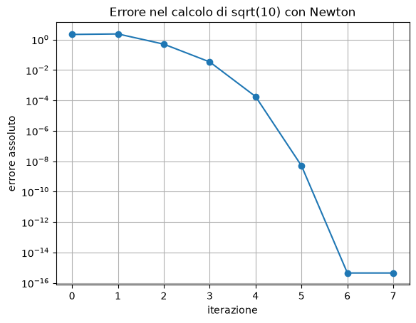
28. Calcolo del reciproco \(1/a\)#
Per calcolare il reciproco di \(a\), si può risolvere
Con
Newton dà
Questa formula usa solo moltiplicazioni e sottrazioni, ed è storicamente importante per implementare divisioni.
def reciprocal_newton(a, x0=None, tol=1e-14, max_iter=50):
if a == 0:
raise ZeroDivisionError("a non può essere zero.")
if x0 is None:
# Scelta semplice ma non ottimale.
x = 1.0 / (2 ** math.ceil(math.log2(abs(a))))
if a < 0:
x = -x
else:
x = float(x0)
hist = [x]
for k in range(1, max_iter + 1):
x_new = x * (2 - a * x)
hist.append(x_new)
if abs(x_new - x) <= tol:
return x_new, k, hist
x = x_new
return x, max_iter, hist
a = 7.0
root, it, hist = reciprocal_newton(a)
print("reciproco Newton:", root)
print("1/a:", 1/a)
print("iterazioni:", it)
print("errore:", abs(root - 1/a))
reciproco Newton: 0.14285714285714285
1/a: 0.14285714285714285
iterazioni: 5
errore: 0.0
29. Radice \(m\)-esima#
Per approssimare
risolviamo
Newton dà
def mth_root_newton(a, m, x0=1.0, tol=1e-14, max_iter=50):
if a <= 0:
raise ValueError("a deve essere positivo.")
if m < 2:
raise ValueError("m deve essere almeno 2.")
x = float(x0)
hist = [x]
for k in range(1, max_iter + 1):
x_new = ((m - 1) * x + a / (x ** (m - 1))) / m
hist.append(x_new)
if abs(x_new - x) <= tol:
return x_new, k, hist
x = x_new
return x, max_iter, hist
a = 27
m = 3
root, it, hist = mth_root_newton(a, m)
print("Radice m-esima:", root)
print("Valore atteso:", a ** (1/m))
print("iterazioni:", it)
Radice m-esima: 3.0
Valore atteso: 3.0
iterazioni: 10
30. Esempio: \(f(x)=x^3-3x+2\)#
Consideriamo
Si fattorizza come
Quindi le radici sono:
\(x=-2\), radice semplice;
\(x=1\), radice doppia.
Newton dovrebbe convergere quadraticamente verso \(-2\) e linearmente verso \(1\).
f = lambda x: x**3 - 3*x + 2
df = lambda x: 3*x**2 - 3
# Radice semplice -2
root1, it1, hist1, reason1 = newton(f, df, x0=-2.4, max_iter=20, return_history=True)
# Radice doppia 1
root2, it2, hist2, reason2 = newton(f, df, x0=1.2, max_iter=20, return_history=True)
print("Radice semplice:")
print(" root =", root1, "it =", it1, "arresto =", reason1)
print("\nRadice doppia:")
print(" root =", root2, "it =", it2, "arresto =", reason2)
Radice semplice:
root = -2.0 it = 5 arresto = residual
Radice doppia:
root = 1.0000002031692978 it = 20 arresto = max_iter
def print_error_table(history, xstar, quadratic=False):
errors = [abs(xk - xstar) for k, xk, fxk, step in history]
for k in range(len(errors)-1):
if quadratic:
denom = errors[k]**2
label = "|e_{k+1}|/|e_k|^2"
else:
denom = errors[k]
label = "|e_{k+1}|/|e_k|"
ratio = errors[k+1] / denom if denom != 0 else np.nan
print(f"k={k:2d}, x={history[k][1]: .12f}, errore={errors[k]:.3e}, {label}={ratio:.6f}")
print("Verso -2, controllo quadratico:")
print_error_table(hist1, -2.0, quadratic=True)
print("\nVerso 1, controllo lineare:")
print_error_table(hist2, 1.0, quadratic=False)
Verso -2, controllo quadratico:
k= 0, x=-2.400000000000, errore=4.000e-01, |e_{k+1}|/|e_k|^2=0.476190
k= 1, x=-2.076190476190, errore=7.619e-02, |e_{k+1}|/|e_k|^2=0.619469
k= 2, x=-2.003596010676, errore=3.596e-03, |e_{k+1}|/|e_k|^2=0.664278
k= 3, x=-2.000008589972, errore=8.590e-06, |e_{k+1}|/|e_k|^2=0.666661
k= 4, x=-2.000000000049, errore=4.919e-11, |e_{k+1}|/|e_k|^2=0.000000
Verso 1, controllo lineare:
k= 0, x= 1.200000000000, errore=2.000e-01, |e_{k+1}|/|e_k|=0.515152
k= 1, x= 1.103030303030, errore=1.030e-01, |e_{k+1}|/|e_k|=0.508165
k= 2, x= 1.052356417198, errore=5.236e-02, |e_{k+1}|/|e_k|=0.504252
k= 3, x= 1.026400814055, errore=2.640e-02, |e_{k+1}|/|e_k|=0.502171
k= 4, x= 1.013257733872, errore=1.326e-02, |e_{k+1}|/|e_k|=0.501098
k= 5, x= 1.006643417773, errore=6.643e-03, |e_{k+1}|/|e_k|=0.500552
k= 6, x= 1.003325374626, errore=3.325e-03, |e_{k+1}|/|e_k|=0.500277
k= 7, x= 1.001663607293, errore=1.664e-03, |e_{k+1}|/|e_k|=0.500139
k= 8, x= 1.000832034087, errore=8.320e-04, |e_{k+1}|/|e_k|=0.500069
k= 9, x= 1.000416074710, errore=4.161e-04, |e_{k+1}|/|e_k|=0.500035
k=10, x= 1.000208051778, errore=2.081e-04, |e_{k+1}|/|e_k|=0.500017
k=11, x= 1.000104029496, errore=1.040e-04, |e_{k+1}|/|e_k|=0.500009
k=12, x= 1.000052015650, errore=5.202e-05, |e_{k+1}|/|e_k|=0.500004
k=13, x= 1.000026008050, errore=2.601e-05, |e_{k+1}|/|e_k|=0.500002
k=14, x= 1.000013004081, errore=1.300e-05, |e_{k+1}|/|e_k|=0.500001
k=15, x= 1.000006502053, errore=6.502e-06, |e_{k+1}|/|e_k|=0.500001
k=16, x= 1.000003251031, errore=3.251e-06, |e_{k+1}|/|e_k|=0.499999
k=17, x= 1.000001625511, errore=1.626e-06, |e_{k+1}|/|e_k|=0.499992
k=18, x= 1.000000812743, errore=8.127e-07, |e_{k+1}|/|e_k|=0.499976
k=19, x= 1.000000406352, errore=4.064e-07, |e_{k+1}|/|e_k|=0.499984
Parte IX — Metodo delle secanti#
31. Motivazione#
Newton richiede la valutazione della derivata \(f'(x)\).
In alcuni problemi:
la derivata è costosa;
la derivata non è disponibile;
la funzione è data come procedura numerica o dati sperimentali.
Il metodo delle secanti sostituisce la derivata con un rapporto incrementale:
Sostituendo questa approssimazione nella formula di Newton si ottiene:
32. Interpretazione geometrica#
Newton usa la tangente alla curva nel punto \(x_k\).
Il metodo delle secanti usa invece la retta secante passante per i due punti
e
Il nuovo iterato \(x_{k+1}\) è l’intersezione di questa retta con l’asse \(x\).
Grafico della secante#
Il metodo delle secanti sostituisce la tangente di Newton con la retta passante per due punti della curva:
Il nuovo iterato \(x_{k+1}\) è l’intersezione di questa retta con l’asse \(x\).
# Interpretazione geometrica del metodo delle secanti.
f_sec = lambda x: x**2 - 2
x0 = 1.0
x1 = 2.0
f0 = f_sec(x0)
f1 = f_sec(x1)
x2 = x1 - f1 * (x1 - x0) / (f1 - f0)
xs = np.linspace(0.5, 2.3, 500)
secant_line = f0 + (f1 - f0)/(x1 - x0) * (xs - x0)
plt.figure(figsize=(8, 5))
plt.plot(xs, f_sec(xs), label="f(x)=x^2-2")
plt.plot(xs, secant_line, "--", label="retta secante")
plt.axhline(0, color="black", linewidth=1)
plt.scatter([x0, x1], [f0, f1], s=70, zorder=4, label="punti usati")
plt.scatter([x2], [0], s=80, zorder=5, label="nuovo iterato x2")
plt.vlines([x0, x1], [0, 0], [f0, f1], linestyles=":")
plt.annotate("x0", xy=(x0, 0), xytext=(x0-0.12, -0.35))
plt.annotate("x1", xy=(x1, 0), xytext=(x1+0.04, -0.35))
plt.annotate("x2", xy=(x2, 0), xytext=(x2-0.15, 0.35),
arrowprops=dict(arrowstyle="->"))
plt.title("Metodo delle secanti: intersezione della secante con l'asse x")
plt.xlabel("x")
plt.ylabel("f(x)")
plt.ylim(-1.2, 3.0)
plt.grid(True)
plt.legend()
plt.show()
print("x0 =", x0)
print("x1 =", x1)
print("x2 =", x2)
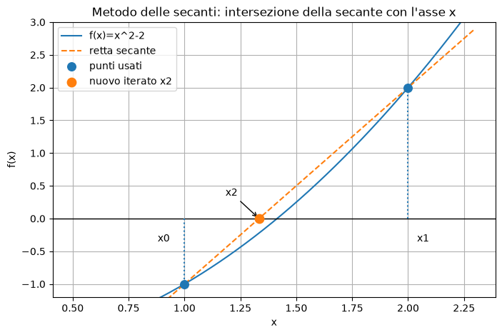
x0 = 1.0
x1 = 2.0
x2 = 1.3333333333333335
def secant(f, x0, x1, tol_x=1e-12, tol_f=1e-14, max_iter=50, return_history=False):
x_prev = float(x0)
x_curr = float(x1)
history = [(0, x_prev, f(x_prev), None),
(1, x_curr, f(x_curr), abs(x_curr - x_prev))]
for k in range(2, max_iter + 1):
f_prev = f(x_prev)
f_curr = f(x_curr)
denom = f_curr - f_prev
if abs(denom) < np.finfo(float).tiny:
raise ZeroDivisionError("Denominatore quasi nullo nel metodo delle secanti.")
x_new = x_curr - f_curr * (x_curr - x_prev) / denom
step = abs(x_new - x_curr)
history.append((k, x_new, f(x_new), step))
if step <= tol_x + np.finfo(float).eps * min(abs(x_new), abs(x_curr)):
return (x_new, k, history, "step") if return_history else (x_new, k)
if abs(f(x_new)) <= tol_f:
return (x_new, k, history, "residual") if return_history else (x_new, k)
x_prev, x_curr = x_curr, x_new
return (x_curr, max_iter, history, "max_iter") if return_history else (x_curr, max_iter)
f = lambda x: x**2 - 2
root, it, hist, reason = secant(f, 1.0, 2.0, return_history=True)
print("Radice:", root)
print("Iterazioni:", it)
print("Motivo arresto:", reason)
print("Errore:", abs(root - math.sqrt(2)))
for k, xk, fxk, step in hist:
print(f"k={k:2d}, x={xk:.15f}, f(x)={fxk:.3e}, step={step}")
Radice: 1.4142135623730954
Iterazioni: 7
Motivo arresto: residual
Errore: 2.220446049250313e-16
k= 0, x=1.000000000000000, f(x)=-1.000e+00, step=None
k= 1, x=2.000000000000000, f(x)=2.000e+00, step=1.0
k= 2, x=1.333333333333333, f(x)=-2.222e-01, step=0.6666666666666665
k= 3, x=1.400000000000000, f(x)=-4.000e-02, step=0.06666666666666665
k= 4, x=1.414634146341463, f(x)=1.190e-03, step=0.014634146341463206
k= 5, x=1.414211438474870, f(x)=-6.007e-06, step=0.00042270786659326376
k= 6, x=1.414213562057320, f(x)=-8.931e-10, step=2.12358245033073e-06
k= 7, x=1.414213562373095, f(x)=8.882e-16, step=3.157749617344052e-10
33. Ordine di convergenza del metodo delle secanti#
Per radici semplici e buoni punti iniziali, il metodo delle secanti ha ordine
Questo valore è maggiore di 1, quindi la convergenza è superlineare, ma minore di 2, quindi più lenta di Newton vicino a una radice semplice.
Il vantaggio è che non richiede la derivata.
# Stima empirica dell'ordine di convergenza
xstar = math.sqrt(2)
errors = [abs(xk - xstar) for k, xk, fxk, step in hist if abs(xk - xstar) > 0]
print("Errori:", errors)
# Stima p_k = log(e_{k+1}/e_k) / log(e_k/e_{k-1})
for k in range(1, len(errors)-1):
if errors[k-1] > 0 and errors[k] > 0 and errors[k+1] > 0:
p_est = math.log(errors[k+1]/errors[k]) / math.log(errors[k]/errors[k-1])
print(f"k={k}, p stimato = {p_est:.6f}")
Errori: [0.41421356237309515, 0.5857864376269049, 0.08088022903976166, 0.014213562373095012, 0.00042058396836819334, 2.1238982250704197e-06, 3.157747396898003e-10, 2.220446049250313e-16]
k=1, p stimato = -5.713032
k=2, p stimato = 0.878174
k=3, p stimato = 2.024593
k=4, p stimato = 1.502252
k=5, p stimato = 1.666619
k=6, p stimato = 1.607453
Parte X — Metodi ibridi#
34. Perché combinare bisezione e Newton#
La bisezione è lenta ma robusta: se c’è cambio di segno, converge.
Newton è veloce ma locale: può divergere se il punto iniziale non è buono.
Una strategia pratica è:
usare bisezione per restringere l’intervallo;
passare a Newton quando il punto medio è abbastanza vicino alla radice.
Questa idea riflette l’osservazione che Newton è un metodo terminale veloce, mentre la bisezione è un metodo iniziale globale.
def hybrid_bisection_newton(f, df, a, b, n_bisect=10, tol=1e-12, max_newton=30):
# Prima fase: alcune iterazioni di bisezione
root_bis, _, hist_bis = bisection(f, a, b, tol=0.0, max_iter=n_bisect, return_history=True)
x0 = root_bis
# Seconda fase: Newton
root_newton, it_newton, hist_newton, reason = newton(
f, df, x0=x0, tol_x=tol, tol_f=tol, max_iter=max_newton, return_history=True
)
return root_newton, hist_bis, hist_newton, reason
f = lambda x: x**3 - x - 2
df = lambda x: 3*x**2 - 1
root, hist_bis, hist_newton, reason = hybrid_bisection_newton(f, df, 1, 2)
print("Radice:", root)
print("f(root):", f(root))
print("Iterazioni bisezione:", len(hist_bis))
print("Iterazioni Newton:", len(hist_newton)-1)
print("Arresto:", reason)
Radice: 1.5213797068045773
f(root): 5.773159728050814e-14
Iterazioni bisezione: 10
Iterazioni Newton: 2
Arresto: residual
Parte XI — Zeri di polinomi#
35. Polinomi e radici#
Un polinomio di grado \(n\) ha, contando le molteplicità, \(n\) radici reali o complesse.
Se il polinomio ha coefficienti reali, le radici complesse compaiono in coppie coniugate.
Nelle applicazioni spesso interessa trovare solo le radici reali in un intervallo assegnato.
Un approccio possibile è:
isolare gli intervalli che contengono radici reali;
applicare un metodo locale, come bisezione, Newton o secanti, per approssimarle.
Idea generale: isolare e poi raffinare#
Per trovare gli zeri reali di un polinomio è spesso utile separare il problema in due fasi:
isolamento: individuare intervalli che contengono una o più radici;
raffinamento: applicare un metodo numerico, come bisezione, Newton o secanti, su ciascun intervallo.
Il metodo di Sturm serve proprio per contare quante radici reali distinte si trovano in un intervallo.
# Esempio schematico: polinomio, radici reali e intervalli di isolamento.
def p_sturm_example_numeric(x):
return x**4 - 3*x - 1
xs = np.linspace(-2.2, 2.4, 900)
ys = p_sturm_example_numeric(xs)
# Radici approssimate solo per visualizzazione.
roots = np.roots([1, 0, 0, -3, -1])
real_roots = sorted([float(r.real) for r in roots if abs(r.imag) < 1e-10])
plt.figure(figsize=(9, 5))
plt.plot(xs, ys, label="p(x)=x^4-3x-1")
plt.axhline(0, color="black", linewidth=1)
# Intervalli indicati dalla tabella di Sturm: (-1,0) e (1,2).
plt.axvspan(-1, 0, alpha=0.18, label="intervallo con una radice")
plt.axvspan(1, 2, alpha=0.18)
plt.scatter(real_roots, [0]*len(real_roots), s=80, zorder=4, label="radici reali")
for r in real_roots:
plt.annotate("radice", xy=(r, 0), xytext=(r+0.1, 8),
arrowprops=dict(arrowstyle="->"))
plt.title("Idea: isolare gli intervalli che contengono radici")
plt.xlabel("x")
plt.ylabel("p(x)")
plt.ylim(-8, 25)
plt.grid(True)
plt.legend()
plt.show()
print("Radici reali approssimate:", real_roots)
print("Intervalli isolanti: (-1, 0) e (1, 2)")
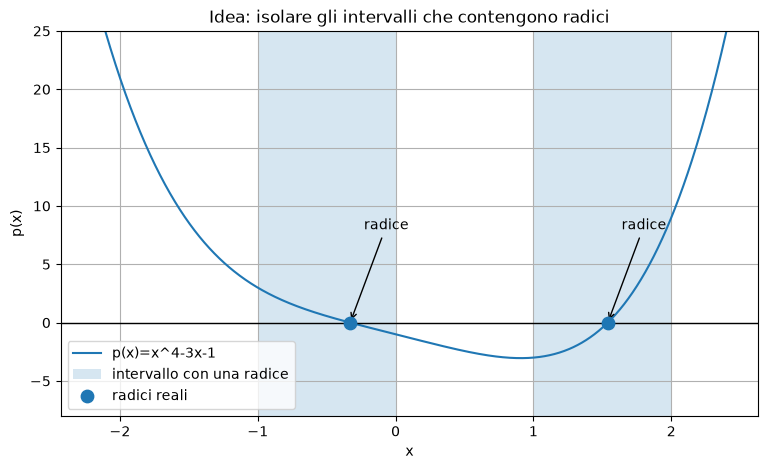
Radici reali approssimate: [-0.3294085281925508, 1.5396133460819756]
Intervalli isolanti: (-1, 0) e (1, 2)
# Radici di un polinomio con NumPy
# p(x)=x^4-3x-1
coeff = [1, 0, 0, -3, -1] # x^4 + 0x^3 + 0x^2 - 3x - 1
roots = np.roots(coeff)
print("Radici:")
for r in roots:
print(r)
Radici:
(1.5396133460819756+0j)
(-0.6051024089447128+1.267126095639481j)
(-0.6051024089447128-1.267126095639481j)
(-0.3294085281925508+0j)
36. Metodo di Sturm#
Il metodo di Sturm permette di determinare il numero di zeri reali distinti di un polinomio in un intervallo assegnato.
Sia dato un polinomio a coefficienti reali \(p(x)\) e la sua derivata prima \(p'(x)\).
Si applica l’algoritmo di Euclide in forma modificata.
Si divide \(p(x)\) per \(p'(x)\), ottenendo quoziente \(q_1(x)\) e resto \(r_1(x)\):
Si pone
Poi si divide \(p'(x)\) per \(s_1(x)\):
e si pone
Si prosegue dividendo \(s_1(x)\) per \(s_2(x)\):
e così via, fino a ottenere l’ultimo polinomio non nullo.
La sequenza
è detta sequenza di Sturm.
Variazioni di segno#
Per ogni numero reale \(c\), valutiamo la sequenza di Sturm in \(c\):
Una variazione di segno si verifica quando un valore positivo è seguito dal successivo valore non nullo negativo, o viceversa.
Indichiamo con \(S(c)\) il numero di variazioni di segno nella sequenza valutata in \(c\).
Il teorema di Sturm afferma che, se \(a<b\) e
allora il numero di zeri reali distinti di \(p(x)\) compresi fra \(a\) e \(b\) è
Esempio#
Consideriamo il polinomio
La sua derivata è
La sequenza di Sturm è:
L’ultimo polinomio è costante e positivo.
Valutando in alcuni \(x\) si ottiene:
\(x\) |
\(-2\) |
\(-1\) |
\(0\) |
\(1\) |
\(2\) |
\(3\) |
|---|---|---|---|---|---|---|
\(p(x)\) |
\(21\) |
\(3\) |
\(-1\) |
\(-3\) |
\(9\) |
\(71\) |
\(p'(x)\) |
\(-35\) |
\(-7\) |
\(-3\) |
\(1\) |
\(29\) |
\(105\) |
\(s_1(x)\) |
\(-7/2\) |
\(-5/4\) |
\(1\) |
\(13/4\) |
\(11/2\) |
\(31/4\) |
\(s_2(x)\) |
\(2443/729\) |
\(2443/729\) |
\(2443/729\) |
\(2443/729\) |
\(2443/729\) |
\(2443/729\) |
\(S(x)\) |
\(2\) |
\(2\) |
\(1\) |
\(1\) |
\(0\) |
\(0\) |
Da questa tabella si vede che \(S(x)\) decresce.
Il numero di radici in un intervallo \((a,b)\) è \(S(a)-S(b)\).
Dalla tabella:
tra \(-2\) e \(-1\) non ci sono radici, perché \(S(-2)-S(-1)=2-2=0\);
tra \(-1\) e \(0\) c’è una radice, perché \(S(-1)-S(0)=2-1=1\);
tra \(0\) e \(1\) non ci sono radici, perché \(S(0)-S(1)=1-1=0\);
tra \(1\) e \(2\) c’è una radice, perché \(S(1)-S(2)=1-0=1\);
tra \(2\) e \(3\) non ci sono radici, perché \(S(2)-S(3)=0-0=0\).
Inoltre, poiché \(S(x)\) non può diventare negativo, dal fatto che \(S(2)=0\) si deduce che non ci sono altre radici per \(x>2\).
Dal conteggio all’approssimazione#
Il metodo di Sturm fornisce il numero di radici reali distinte in un intervallo, ma non calcola direttamente il valore delle radici.
Una procedura pratica è:
scegliere un intervallo iniziale;
usare Sturm per sapere quante radici contiene;
suddividere l’intervallo finché ogni sottointervallo contiene al più una radice;
su ciascun intervallo con una sola radice, applicare un metodo numerico come bisezione, Newton o secanti.
Nel nostro esempio, dopo Sturm possiamo applicare la bisezione su \((-1,0)\) e su \((1,2)\).
# Raffinamento numerico delle radici isolate usando la bisezione.
def bisection_basic(f, a, b, tol=1e-12, max_iter=100):
fa = f(a)
fb = f(b)
if fa*fb > 0:
raise ValueError("La funzione non cambia segno nell'intervallo.")
for k in range(max_iter):
m = 0.5*(a+b)
fm = f(m)
if abs(b-a) <= tol or fm == 0:
return m, k+1
if fa*fm < 0:
b = m
fb = fm
else:
a = m
fa = fm
return 0.5*(a+b), max_iter
for a, b in [(-1, 0), (1, 2)]:
r, it = bisection_basic(p, a, b)
print(f"Intervallo ({a},{b}) -> radice = {r:.15f}, p(r) = {p(r):.3e}, iterazioni = {it}")
---------------------------------------------------------------------------
NameError Traceback (most recent call last)
Cell In[40], line 26
22
23 return 0.5*(a+b), max_iter
24
25 for a, b in [(-1, 0), (1, 2)]:
---> 26 r, it = bisection_basic(p, a, b)
27 print(f"Intervallo ({a},{b}) -> radice = {r:.15f}, p(r) = {p(r):.3e}, iterazioni = {it}")
NameError: name 'p' is not defined
Parte XII — Esercizi#
Esercizio 1 — Bisezione#
Implementare il metodo di bisezione per
nell’intervallo \([0,1]\).
Domande:
Perché esiste una radice in \([0,1]\)?
Quante iterazioni servono per ottenere tolleranza \(10^{-8}\)?
Confrontare il risultato con Newton.
# Spazio di lavoro
f = lambda x: math.exp(-x) - x
root, it = bisection(f, 0, 1, tol=1e-8)
print(root, it, f(root))
0.5671432875096798 28 4.544878695611487e-09
Esercizio 2 — Punti fissi#
L’equazione
può essere trasformata in diversi modi:
Provare le diverse iterazioni e studiarne la convergenza.
# Spazio di lavoro
g_a = lambda x: 2/x
g_b = lambda x: 0.5*(x + 2/x)
g_c = lambda x: x - 0.1*(x**2 - 2)
for name, g in [("2/x", g_a), ("Erone", g_b), ("alpha=0.1", g_c)]:
root, it, hist = fixed_point(g, 1.5, max_iter=30, return_history=True)
print(name, "ultimo valore:", root, "iterazioni:", it, "errore:", abs(root - math.sqrt(2)))
2/x ultimo valore: 1.5 iterazioni: 30 errore: 0.08578643762690485
Erone ultimo valore: 1.414213562373095 iterazioni: 5 errore: 2.220446049250313e-16
alpha=0.1 ultimo valore: 1.414217397147339 iterazioni: 30 errore: 3.834774243927086e-06
Esercizio 3 — Newton e radici multiple#
Considerare
Applicare Newton standard.
Applicare Newton modificato con \(m=3\).
Confrontare il numero di iterazioni.
f = lambda x: (x - 2)**3
df = lambda x: 3*(x - 2)**2
root_std, it_std, hist_std, _ = newton(f, df, x0=3.0, max_iter=30, return_history=True)
root_mod, it_mod, hist_mod = newton_modified(f, df, x0=3.0, m=3, max_iter=30)
print("Newton standard:", root_std, "it:", it_std)
print("Newton modificato:", root_mod, "it:", it_mod)
Newton standard: 2.0000176009457964 it: 27
Newton modificato: 2.0 it: 1
Esercizio 4 — Secanti#
Usare il metodo delle secanti per risolvere
partendo da \(x_0=0\) e \(x_1=1\).
Confrontare con Newton.
f = lambda x: math.cos(x) - x
df = lambda x: -math.sin(x) - 1
root_sec, it_sec, _, _ = secant(f, 0, 1, return_history=True)
root_new, it_new, _, _ = newton(f, df, 1, return_history=True)
print("Secanti:", root_sec, "iterazioni:", it_sec)
print("Newton:", root_new, "iterazioni:", it_new)
Secanti: 0.7390851332151607 iterazioni: 7
Newton: 0.7390851332151607 iterazioni: 4
Esercizio 5 — Metodo di Sturm#
Usare il metodo di Sturm per contare le radici reali distinte del polinomio
negli intervalli:
Poi approssimare le radici con bisezione quando possibile.
import sympy as sp
x_sym = sp.Symbol("x")
def sturm_sequence(poly_expr):
p0 = sp.Poly(poly_expr, x_sym)
p1 = sp.Poly(sp.diff(poly_expr, x_sym), x_sym)
seq = [p0, p1]
while True:
_, rem = sp.div(seq[-2], seq[-1])
if rem.is_zero:
break
seq.append(-rem)
return seq
def sign_variations(values):
signs = []
for v in values:
vf = float(v)
if vf > 0:
signs.append(1)
elif vf < 0:
signs.append(-1)
# Se vf == 0, lo ignoriamo
return sum(
1 for i in range(len(signs) - 1)
if signs[i] != signs[i + 1]
)
def sturm_S(seq, c):
vals = [p.eval(c) for p in seq]
return sign_variations(vals), vals
poly2 = x_sym**3 - x_sym
seq2 = sturm_sequence(poly2)
print("Sequenza di Sturm:")
for p in seq2:
print(p.as_expr())
intervals = [(-2, -0.5), (-0.5, 0.5), (0.5, 2)]
def p2_func(x):
return x**3 - x
def bisection_simple(f, a, b, tol=1e-12, max_iter=100):
fa = f(a)
fb = f(b)
if fa == 0:
return a, 0
if fb == 0:
return b, 0
if fa * fb > 0:
raise ValueError("La funzione non cambia segno nell'intervallo.")
for k in range(1, max_iter + 1):
m = 0.5 * (a + b)
fm = f(m)
if abs(b - a) <= tol or fm == 0:
return m, k
if fa * fm < 0:
b = m
fb = fm
else:
a = m
fa = fm
return 0.5 * (a + b), max_iter
print("\nConteggio delle radici con Sturm:")
for a, b in intervals:
Sa, _ = sturm_S(seq2, a)
Sb, _ = sturm_S(seq2, b)
count = Sa - Sb
print(f"({a},{b}): {count} radici")
if count == 1:
fa = p2_func(a)
fb = p2_func(b)
if fa == 0:
print(" radice:", a)
elif fb == 0:
print(" radice:", b)
elif fa * fb < 0:
r, it = bisection_simple(p2_func, a, b)
print(" radice:", r)
else:
print(" Sturm rileva una radice, ma non c'è cambio di segno agli estremi.")
print(" Suddividere ulteriormente l'intervallo oppure usare un altro metodo.")
Sequenza di Sturm:
x**3 - x
3*x**2 - 1
2*x/3
1
Conteggio delle radici con Sturm:
(-2,-0.5): 1 radici
radice: -0.9999999999998863
(-0.5,0.5): 1 radici
radice: 0.0
(0.5,2): 1 radici
radice: 0.9999999999998863
Riepilogo finale#
In questo notebook abbiamo studiato i principali metodi numerici per risolvere equazioni non lineari.
Punti chiave:
il problema è trovare \(x^{*}\) tale che \(f(x^{*})=0\);
l’errore sulla radice dipende anche da \(|f'(x^{*})|\);
la bisezione è robusta ma lenta;
l’iterazione funzionale converge localmente se \(|g'|<1\);
Newton è molto veloce vicino a radici semplici;
Newton può rallentare su radici multiple;
il metodo delle secanti evita il calcolo della derivata;
i test di arresto devono considerare sia il passo sia il residuo;
per i polinomi, Sturm permette di contare le radici reali in un intervallo.
Scelta pratica:
Situazione |
Metodo consigliato |
|---|---|
Serve robustezza e c’è cambio di segno |
Bisezione |
Buona approssimazione iniziale e derivata disponibile |
Newton |
Derivata non disponibile |
Secanti |
Radice multipla nota |
Newton modificato |
Polinomio e radici reali in intervallo |
Sturm + bisezione/Newton |
Metodo pratico generale |
Ibrido bisezione + Newton |
Glossario#
Radice o zero: valore \(x^{*}\) tale che \(f(x^{*})=0\).
Metodo iterativo: algoritmo che costruisce una successione \(x_k\).
Punto fisso: soluzione di \(x=g(x)\).
Convergenza lineare: errore ridotto circa di un fattore costante.
Convergenza quadratica: errore successivo proporzionale al quadrato dell’errore precedente.
Residuo: valore \(|f(\tilde{x})|\).
Bisezione: metodo basato sul cambio di segno in un intervallo.
Newton: metodo basato sulla tangente.
Secanti: metodo che approssima la derivata con un rapporto incrementale.
Radice multipla: radice per cui \(f(x)=(x-x^{*})^m q(x)\) con \(m>1\).
Sequenza di Sturm: sequenza di polinomi usata per contare radici reali.